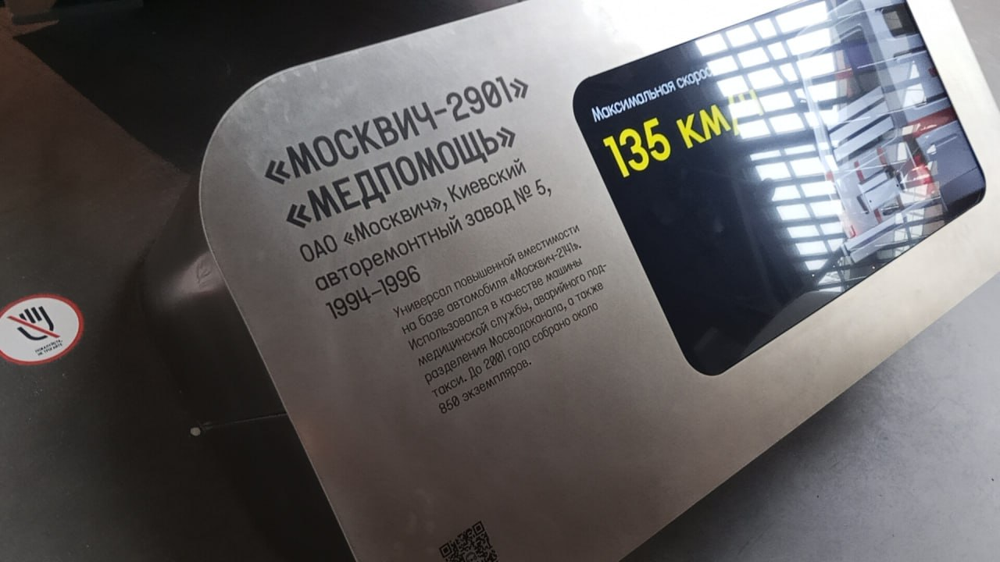

Москвич-2901 «Медпомощь»
«Москвич-2901» «Медпомощь» — универсал повышенной вместимости на базе автомобиля «Москвич-2141». Выпускался с 1994 по 1996 год.
Данный экземпляр является музейным экспонатом и представлен в экспозиции Музея Транспорта Москвы. В своё время эти автомобили использовались в качестве машины медицинской службы, аварийного подразделения Московодоканала, а также такси.
Основные данные
| Модель | «Москвич-2901» «Медпомощь» |
| Базовая модель | «Москвич-2141» |
| Производитель | ОАО «Москвич», Киевский авторемонтный завод № 5 |
| Годы выпуска | 1994–1996 |
| Назначение | Медицинская служба, аварийные службы, такси |
| Максимальная скорость | 135 км/ч |
| Всего собрано | около 850 экземпляров |
| Текущее состояние | Не эксплуатируется (музейный экспонат) |
История
Начало выпуска
На Киевском авторемонтном заводе № 5 стартовало производство медицинского универсала на базе популярного «Москвича-2141». Автомобиль получил индекс 2901 и название «Медпомощь».
Служба в медицинских и аварийных службах
Универсалы повышенной вместимости использовались для перевозки медперсонала и оборудования. Также эти машины можно было встретить в роли такси или аварийных автомобилей Московодоканала.
Снятие с производства
Серийное производство модели завершилось в 1996 году. В дальнейшем выпуск прекратился, а автомобили постепенно списывались из автопарков.
В экспозиции музея
Сейчас один из сохранившихся экземпляров «Медпомощи» представлен в Музее Транспорта Москвы, напоминая о переходном периоде в истории отечественного автопрома.
Фотогалерея

Общий вид медицинского универсала на базе «Москвич-2141».

Музейная табличка с описанием характеристик модели.
Нажмите на фото для увеличения
«Универсал повышенной вместимости на базе автомобиля "Москвич-2141". Использовался в качестве машины медицинской службы, аварийного подразделения Московодоканала, а также такси».